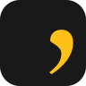

1Where it started
I wanted to write, and kept not getting to it
I planned to write my own pieces about art, curating and AI, and kept not getting to it. My work with texts already lived in five places: analytics, Google Search Console, a content calendar, research files and notes. Adding my own writing on top meant one more round of tabs every morning.
So I asked myself what tool would make me write. Not another editor, there are good ones. A place that says what needs me this morning, keeps what I notice until it becomes a piece, and tells me honestly which pieces still live.
The brief I gave myselfOne screen for the writer’s morning, with the data pulled in on its own
Notes, ideas, a calendar, and the life of every published piece in one place. Readers’ questions and search demand as the source of topics. Publishing and letting a piece go stay the writer’s decisions.
My roleConcept, the writer’s jobs, the flow, the architecture, the prototype in code with a morning data robot, the visual language, the logo and icon.
Scope of this caseToday, Notes, Calendar, Ideas, Darlings, Readers and About me, designed and built. Social posts are reserved in the menu and not designed yet.
Honest statusA personal tool and a public demo on invented data. The flow and the screens are the ones I built; user testing with other writers is the next step.
2Who it is for
Nora writes about art, curating and AI
A fictional writer built from my own situation: a publication on Medium, two digital magazines, readers who are young artists, artists with a day job, independent curators, and more people asking what AI changes in art. Three or four pieces a month next to curating and teaching.
When I start the day
I want to see what needs me first, so I do not open several tabs before I write a line.
When I notice something
I want to keep it in one place at a show or a studio visit, so it can grow into a piece later.
When I choose the next topic
I want evidence that readers ask for it and that I have not written it already.
When I look back
I want to know which pieces still live and which to let go, without opening every stats page.
When an editor asks who I am
I want the right bio in the right length in one click.
When a planned piece slips
I want the calendar to say so, not to keep pretending it is on track.
How might a writer start the morning with one screen that says what needs her, and end it with a piece instead of a tab count?
3The flow
From a note to a piece, and back
Eight steps. Five are the writer’s, one belongs to AI, two run on their own every morning. Measuring closes the loop: what readers ask in the comments comes back as notes and ideas.
NoticeA show, a studio visit, a book
NoteSaved as a seed in Notes
IdeaChecked against what is already published
PlanA date in the calendar
Write with AIBrief, readers’ questions, fact check
PublishOnly on the writer’s word
IndexOne tap to Search Console
MeasureDarlings, every morning
■ Writer■ AI■ Runs on its own↺ readers’ questions return as notes and ideas
Decision 1Notes come first, not stats
The writer’s own observations are the start of the loop. Numbers come second and only answer “does it still live”.
Decision 2Nothing is suggested twice
Every idea is checked against published pieces. If one exists, the card says so and offers a new angle instead.
Decision 3AI drafts a brief, not the piece
It collects questions and facts and stops after the outline. Publishing is always the writer’s call.
3Architecture
A morning robot fills one data file. The app only reads it.
SourcesWhere the writer’s work lives
- Stats of each outlet
- Google Search Console
- The calendar and plans
- Digests and newsletters she follows
- Readers’ questions and forums
→
Every morning, on its ownThe robot
- Collects every source into one file
- Sorts pieces: working, growing, faded, let it go, new
- Finds what needs attention and what takes off
- Suggests ideas that are not written yet
→
For the writerCommonplace
A static page: opens fast on a phone, works on any server. Notes, plans and bios are kept on her device in the demo.
The menu: work on top, me at the bottom
Write- Today: the morning
- Notes: the commonplace book
- Calendar: out, planned, missed
- Ideas: what to write next
- Darlings: every published piece
Know- Readers: who reads and what they ask
- Keywords: searches around the topics
- Research: reviews, forums, questions to AI
- Queue: written, waiting for the last step
Me- About me: bios to paste
- How it works
- Settings
- Social: reserved
4Name and logo
A commonplace book, and a comma for a pause
Six directions in Figma. The comma inside the word won: it is a pause between the common thing you noticed and the place where you keep it.
Common,placeOops, I wrote it again.

The app icon keeps only the comma: yellow on black.
Names from writers’ languageCommonplace is the old name for a writer’s book of notes and quotes. Darlings, the screen of published pieces, comes from “kill your darlings”. The tagline is a wink: you keep coming back to write.
One ruleThe tagline is set to exactly the width of the word, checked by pixels, on desktop and on the phone.
5Final design: Today
The morning in one screen
123456
1Four numbers, big
Reads, views, new followers, pieces live, each against the 28 days before.
2To do
Four counters: needs you now, due this week, seeds to grow, missed the date. Missed turns red.
3Calendar
A month at a glance with a segmented control: all, pieces, social. Yellow is published, outlined is planned.
4Your latest note
For a writer, this is the face of the screen. One tap turns it into a brief or a plan.
5Today’s list
What to do and on which piece. Red means now.
6Needs attention and taking off
What dropped, what fell out of the index, and what grew, to learn from.
5Final design: Notes
The commonplace book itself
 12345
12345
1One field
“What did you notice today?” A source and tags, nothing else to fill.
2Seeds, ideas, in a piece
Every note has a stage, so the book shows what is still waiting.
3Set like reading
Notes are in a book serif, the tools around them in a plain sans.
4From note to work
Write a piece opens a brief, Plan it puts a date in the calendar.
5Where it went
A used note links to the piece it became.
5Final design: Ideas and Calendar
What to write next, and when it goes out
Ideas from five sources
Her notes, readers’ questions, search demand, searches with no piece yet, and digests she follows. Each card says why now, for which reader, and offers Write with AI or Plan it.
A calendar that does not pretend
Published pieces and social posts are picked up from where they live. A plan that missed its date turns red with one action: move it.
5Final design: Darlings
Kill your darlings, but look at the numbers first
1Five groups
Working, growing, waved and faded, let it go?, new. The question mark is deliberate: the data suggests, the writer decides.
2Where it lives
Each piece shows its outlet: Medium or a magazine.
3Eight numbers
Reads, views, read ratio, Google position, read time, followers, earnings, index.
4Twelve weeks of views
The shape of the curve says more than any single number.
Next iteration, in Figma
Eight numbers become one chart with a segmented control: reads, views, followers, earned. Each bar is a day this month, the yellow tick is the same day last month.
5Final design: Readers and About me
Write for people, and introduce yourself in one click
Readers
Five reader types with what they want, what hurts and what loses them, the questions they ask most, and a pain map with sources. Keyword tools were nearly blind for the niche, readers’ own questions filled the gap.
About me
One line, short third person, short first person, CV line, speaker intro. Word count, where each was last used, edit in place, copy. Every editor and festival asks for a different length.
6Visual language
The desk next to the page
The writer lives on Medium, so the tool borrows its calm: a serif for what is read, a plain sans for the tools, black pill buttons, hairlines, one yellow accent. Medium’s own fonts are licensed, so free look-alikes stand in.
TypeNewsreader headlines and numbers
Source Serif 4 notes and quotes
Inter interface
Ink #242424
Body #6B6B6B
Line #E5E5E5
Yellow #FFC017
Growing #1A8917
Missed #C94A4A
Rules- Yellow marks what is the writer’s: published days, her latest note, the comma
- Green only for what grows, red only for what missed a date or fell out of the index
- No middle dots, no em dashes in the interface copy
Component: segmented control and comparison bars
A segmented control switches the metric, not the page. Bars on a grey track, a yellow tick for the same day last month: every bar answers “better or worse than a month ago”.
6On the phone
The same morning, in a browser on the way
Notes happen at a show or in a studio, not at a desk. The phone view keeps the five daily tabs in a bottom bar and puts the composer one tap away.
What changes on the phone- The side menu becomes a bottom bar: Today, Notes, Calendar, Ideas, Darlings
- The four numbers sit in a two by two grid
- The month calendar turns into a list by day
- No horizontal scroll at 390 pixels, checked on every screen
7Outcome
What it does now, and what is next
BeforeNotes scattered, stats in every outlet, a calendar that said a piece was ready when it never went out, a bio written again for every editor.
AfterOne morning screen, a book of notes that turns into ideas, ideas checked against what exists, a calendar that marks slips, a bio in one click.
Under the hoodA scheduled job collects the data every morning on its own. The app is one static page that reads one file: fast on a phone, easy to move to any server.
What I would do next- Pitches to editors: who got which pitch, replied, accepted, paid
- An inbox for readers’ questions, each one into a note, an idea or a reply
- AI suggests changes to a fading piece, the writer accepts or skips each
- Social posts cut from each piece
What I would test- Five writers, one week each, the morning only
- Time from opening the app to the first written line
- How many notes become pieces in a month
- Which bio lengths get copied most
What I learnedDesigning for myself made every shortcut obvious, and every dishonest number too. The turn came from asking what I do first in the morning: not stats, a note. Building in code let me throw versions away the same day.